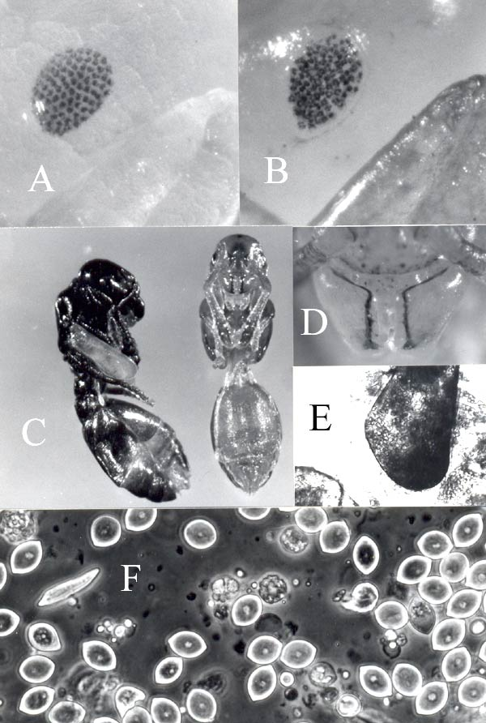

Mattesia geminata
Gregarinen als Ameisen-Parasiten: Mattesia geminata
Eine für Ameisen bzw. deren Brut tödliche Infektion mit Gregarinen der Gattung Mattesia wurde erstmalig 1979 bei tropischen Feuerameisen (Solenopsis geminata) aus Florida beschrieben.[1] Crosland beobachtete Gregarinenbefall bei australischen Bullants, Myrmecia pilosula.[2] Befallene Arbeiterinnen färbten sich nicht voll schwarz aus und blieben weichhäutig, wie noch unausgefärbte Jungtiere. Buschinger et al. berichteten über eine verwandte (wahrscheinlich identische) Mattesia-Art aus der Umgebung des Yellowstone-Parks, USA, in dortigen Leptothorax-Arten.[3] Sie ließ sich problemlos in Leptothorax-Arten aus Deutschland züchten, natürlich unter großen Sicherheitsvorkehrungen, um unsere einheimischen Arten nicht durch unbeabsichtigte Freisetzung zu gefährden.
Kleespies et al. (1997) und Buschinger et al. (1999) haben über den bisher unbekannten Lebenszyklus, die Infektionswege (die Larven werden befallen und sterben dann im Puppenstadium) sowie über potenzielle Wirtsarten für den Parasiten berichtet.[4] [5] Das recht breite Spektrum an Wirtsarten umfasst außer einigen Leptothorax-Arten auch z.B. ihren interessanten und gefährdeten Sklavenhalter Harpagoxenus sublaevis. Weiterhin konnte die Pharaoameise sehr erfolgreich infiziert werden, wenngleich deren effektive Bekämpfung durch den Parasiten uns unwahrscheinlich vorkommt. Eine Weiterzucht der Mattesia mit dem Ziel, ein biologisches Bekämpfungsmittel für diese Schadameise zu entwickeln, haben wir dann nicht betrieben. Sicher hätte sich ein solches Mittel gut vermarkten lassen, aber es wäre gewissenlos gewesen, so etwas u. U. in die Natur zu entlassen.
Aus der Arbeit Buschinger et al.[3] habe ich die dort enthaltene Abbildung (leicht verändert) hier eingefügt (Bild 1). Aufgefallen waren mir die infizierten Puppen bereits 1977 in Nestern einer Leptothorax-Art nahe West-Yellowstone: Sie hatten zahnlose Mandibeln (Bild 1, E). Aber erst 1993 gelang es, lebende Völker mit infizierter Brut nach Deutschland zu bringen, worauf Zuchtversuche und die Aufklärung des äußerst komplizierten Lebenszyklus folgen konnten.
Mattesia geminata (es ist nach allem, was wir herausfinden konnten, dieselbe Art wie die in australischen Bullants vorkommende) ist ein schlagender Beweis dafür, dass Parasiten von Ameisen auch Ameisen anderer Unterfamilien und Gattungen, und auch aus ganz unterschiedlichen Klimazonen, befallen können!
Bild 1: A – Bereits pigmentierte Augenanlage einer noch weißen, nicht infizierten Puppe von Leptothorax sp.; die Ommatidien sind recht regelmäßig im Wabenmuster angeordnet. B – Bei dieser infizierten Puppe sind die Einzelaugen im Gegensatz zu A regellos angeordnet, sichtlich „gestört“. C – Die rechte Weibchenpuppe ist gesund und kurz vor dem Schlüpfen, die linke ist infiziert, dunkel grau gefärbt, schon etwas ausgetrocknet. In diesem Zustand wird sie aus dem Nest getragen. Arbeiterinnen benachbarter Völker (auch einer anderen Art) tragen sie ein und verfüttern Teile mit infektiösen Sporen an ihre eigenen Larven, die anschließend erkranken. D - Mandibeln einer gesunden, noch unausgefärbten Puppe. Der Kaurand ist gezähnt. E – Mandibeln einer infizierten, sterbenden Puppe. Der Kaurand ist sackartig gerundet; im Inneren ist eine feine „Körnung“ zu erkennen, die Sporen der Gregarinen. F – So sieht es in der Hämolymphe einer infizierten Puppe aus. Die zitronenförmigen, festschaligen Gebilde sind Sporen, deren jede 8 infektiöse „Sporozoiten“ enthält. Das längliche Gebilde links von dem „F“ ist ein „Trophozoit“, ein aus dem Sporozoiten unter Nahrungsaufnahme heranwachsendes Individuum.

(nach Buschinger et al. 1995[3], verändert)
{kind=link}
Weiterführende Literatur
- Roberto M. Pereira, , David F. Williams, James J. Becnel and David H. Oi 2002: Yellow-head disease caused by a newly discovered Mattesia sp. in populations of the red imported fire ant, Solenopsis invicta. - Journal of Invertebrate Pathology 81, 45-48.
Einzelnachweise
- ^ D.P. Jouvenaz, D.P., Anthony D.W. (1979): Mattesia geminata n.sp. (Neogregarinida: Ophryocystidae) a parasite of the tropical fire ant, Solenopsis geminata (Fabricius). J. Protozool. 26, 354-356.
- ^ Crosland, M.W.J. (1988): Effect of a gregarine parasite on the color of Myrmecia pilosula (Hymenoptera: Formicidae).- Ann. Entomol. Soc. America 81, 481-484.
- ^ a b c Buschinger, A., Kleespies, R.G., Schumann, R.D. (1995): A gregarine parasite of Leptothorax ants from North America. Insectes Sociaux 42, 219-222.
- ^ Kleespies, R.G., Huger, A.M., Buschinger, A., Nähring, S., Schumann, R.D. (1997): Studies on the life history of a neogregarine parasite found in Leptothorax ants from North America. Biocontrol Science and Technology 7, 117-129.
- ^ Buschinger, A., Kleespies, R. (1999): Host range and host specificity of an ant-pathogenic gregarine parasite, Mattesia geminata (Neogregarinida: Lipotrophidae). Entomol. Gener. 24, 93-104.